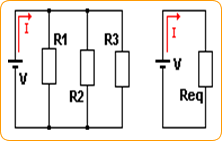
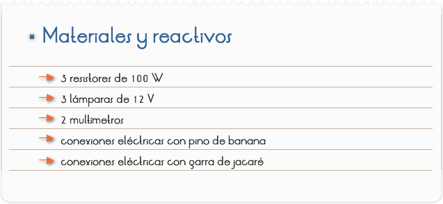
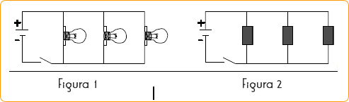
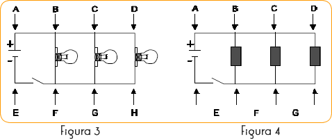
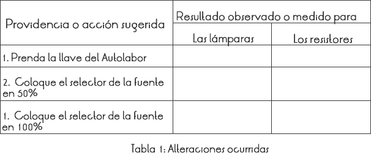
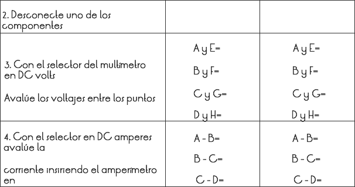
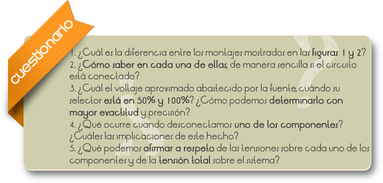
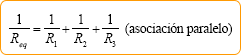

Introducción
Resistencias en paralelo.
En el circuito de resistencias en serie la corriente tiene un sólo camino para circular, en el circuito de resistencias en paralelo la corriente se divide y circula por varios caminos. En este caso se tienen 2 o más resistencias. Estas resistencias están unidas por sus dos extremos como se muestra en la siguiente figura.

La corriente que suministra la fuente de tensión V es la misma en el circuito original (con R1, R2 y R3) y en el equivalente. En el circuito original la corriente se divide y pasa por cada una de las resistencias, pero el total de la suma de las corrientes de cada resistencia es siempre igual.
La resistencia equivalente de un circuito de resistencias en paralelo es igual al recíproco de la suma de las resistencias individuales, así, la fórmula para un caso de 3 resistencias es:
Rtp (resistencia total en paralelo) = 1 / ( 1/R1 + 1/R2 + 1/R3 )
Objetivos
Estudiar la asociación de resistores en paralelo.

2) Use las tres lámparas y monte la configuración indicada en la figura 1 y, con los tres resistores, la configuración indicada en la figura 2.

3) Use, en este caso, una fuente del AUTOLABOR y el interruptor indicado, será la propia llave del panel de control.
4) Acompañe la tabla 1 con las acciones sugeridas, ejecutándolas primero para el conjunto de lámparas y, posteriormente, para el conjunto de resistores.
5) Observe atentamente, las alteraciones ocurridas y anote en su espacio propio de la tabla. Para las medidas de tensión y corriente, observe las indicaciones de las figuras 3 y 4.



2) Debemos recordar que:
Para medir voltajes: se coloca el multímetro en paralelo con el circuito.
Para medir corrientes: se coloca el multímetro en serie con el circuito.

Comentarios
En los aparatos con los cuales convivimos diariamente, existen diversos tipos de circuitos eléctricos. Entre los más sencillos están aquellos que presentan una fuente eléctrica, una llave o interruptor y un solo tipo de componente eléctrico. Cuando este componente es un resistor, como en el caso de algunas duchas, lámparas y algunos calentadores, llamamos el circuito de resistivo.
Los circuitos resistivos se tornan más complejos cuando involucran más de un resistor, pudiendo existir dos formas de combinación de estos resistores. Son las llamadas asociaciones en serie y en paralelo.
En la asociación en serie, si desconectamos uno de los componentes, todo el conjunto se desconecta (este hecho es visible en las lámparas. Esto ocurre porque en esa asociación la corriente pasa componente por componente y, para llegar al próximo necesita, primero pasar por el anterior.
Debe haber notado que, las lámparas quedan con menor luminosidad, cuando conectadas en serie, de lo que, en paralelo. Esto significa que en la conexión en serie, la corriente establecida es menor, de la que, del circuito en paralelo. Las lámparas quedan con menor brillo porque la tensión en cada lámpara es una parte de la tensión total. Si las tres lámparas fuesen idénticas, cada una de ellas tendría 1/3 de la tensión total fornecida por la fuente. Siendo diferentes, la tensión será mayor en aquella que posea mayor resistencia.
En la asociación, la corriente eléctrica es la misma en todos los resistores lámparas ( l l1 l2 l3 ), mientras la tensión en cada resistor /lámpara es una parte de la tensión total (U U1 U2 U3). El resistor equivale, al conjunto conectado en serie y, tendrá resistencia igual a la suma de las resistencias de cada componente.
Req= R1 + R2 + R3 (asociación en serie)
En la asociación en paralelo, al desconectar uno de los componentes, los demás continúan conectados (este hecho es visible en las lámparas. Veamos que en este tipo de asociación, todo ocurre, como si cada componente estuviese conectado directamente a la fuente, funcionado independientemente unos de los otros.
En la conexión en paralelo, todos los componentes están sometidos a una misma tensión (U =U1 = U2 =U3) mismo que sus resistencias sean diferentes. Además de eso, como la corriente se divide en las bifurcaciones, la corriente en cada resistor es una parte de la corriente total (l = l1+l2 + l3 ) y el resistor equivalente al conjunto conectado en paralelo, tendrá su resistencia determinada por la expresión:

Así las corrientes eléctricas en, las asociaciones en serie son, menores que en las asociaciones en paralelo y, en el caso de cualquier interrupción, ruptura o daño en alguna parte del sistema, la conexión serie desconecta el sistema, mientras la conexión paralelo lo mantiene activado. Esto hace con que las iluminaciones decorativas de navidad y otras decoraciones luminosas, se tornen más seguras cuando conectadas en serie, pues además de involucrar corrientes menores, cualesquier daños más graves al sistema lo desactivarán. A pesar de los aspectos de seguridad ¿ya imaginó la confusión si la instalación de su casa fuese en serie? Para que la TV prendiese todos los aparatos de la casa también deberían estar conectados y, si uno de ellos tuviese problemas, todos quedarían desconectados. Además de eso, con todos conectados, la corriente eléctrica quedaría baja, y el funcionamiento de los mismos sería precario (principalmente motores, calentadores...).